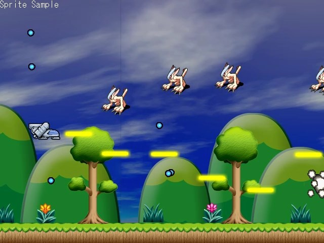

HSP : Hot Soup Processor ver3.6 / onion software 1997-2021(c)
Standard Sprite Programming Guide

- Introduction
- How to use
- Differences from the HSPDX plugin
- What is a sprite
- Initialization and character pattern registration
- Sprite registration
- Move sprites
- Sprite parameters
- Sprite display priority
- Sprite management instructions
- Animation
- Sprite deformation and effects
- Sprite callback
- BG map drawing function
Introduction
A standard sprite is a handy instruction set that can be used for drawing such as 2D games.
It provides a mechanism for managing images used in games, etc., such as moving them together and searching them.
The standard sprite instructions are compatible with the instructions that were added as the hspdx plugin,
It is possible to handle 2D drawing easily.
So far, there have been several ways to use sprites (rectangular images) when drawing in 2D with HSP3.
・ HSPDX plug-in ・ HGIMG / HGIM GX plug-in ・ HGIM G3 plug-in ・ HGIM G4 plug-in ・ Mod_sprite module
Among them, the plug-ins up to HSPDX, HGIMG, and HGIMGX are from the HSP2 era, and development has already been completed.
It is difficult to operate with the current OS and environment.
The HGIMG3 / HGIMG4 plug-in has 3D functionality as well as a highly functional 2D sprite.
It also has functions, but instead of managing all coordinates with real numbers and having many functions
There was a lot of content to learn and it was difficult to handle easily.
So, the HSPDX plug-in that has the longest history and has been used by many users
Based on the instructions, the standard sprite is prepared as a simple and easy-to-use 2D-only sprite.
Sprites can be displayed with simple commands, and sprite images can be freely registered.
It is equipped with a flexible system. Also, sprite callbacks, map drawing, etc.
A unique mechanism has also been introduced, making it more convenient than the original HSPDX plugin.
Coordinates are also managed by integers, making it easy to handle in 2D games and UI displays.
Of course, you can also use the conventional plug-in for autonomous movement by event list and cooperation with 3D.
Standard sprites work on all platforms supported by HSP3Dish and HGIMG4, as well as
We plan to support it in the HSP3 standard runtime as well.
How to use
Standard sprite instructions are integrated into the HSP3Dish and HGIM G4 runtimes. Add the line "#include" hsp3dish.as "" to the beginning of the script If you specify the HSP3Dish runtime, you can also use standard sprite instructions.
#include "hsp3dish.as"; Use HSP3Dish runtime
HGIMG4, an extension of the HSP3Dish runtime, can use standard sprite instructions as well. Of course, the drawing function of HSP3Dish / HGIMG4 runtime and all HSP3 instructions are also available.
Difference from HSPDX plug-in
Standard sprite instructions are often compatible with HSPDX plug-in instructions,
Not all instructions are fully compatible.
The HSPDX plug-in was developed in the HSP2 era, such as screen initialization and palette usage.
Specifications that matched the display driver at that time were also included.
Standard sprites are related to palettes, taking into account the current display driver specifications.
The function has been removed. Also, the instructions related to screen initialization (es_screen, etc.) are
It will use the mechanism (screen instruction) of the HSP3Dish side.
Also, in the HSPDX plug-in, the screen was updated by the es_sync command,
This instruction is obsolete (recognized as a keyword, but nothing is done),
It will be done according to the drawing of HSP3Dish.
In many cases, scripts for past HSPDX plugins will need to be reworked, so
Please note that it is not compatible at all.
However, regarding sprite and character settings, HSPDX plugin instructions starting with es_ ~
Almost all are supported. Also, the HSPDXfix plugin that was extended later has
It also includes expressions such as special effects and rotation enlargement / reduction.
Since the constants and internal structure are also in a format similar to the HSPDX plug-in, some modifications can be made.
It should work in the latest environment.
The HSPDX plugin was only supported on Windows platforms,
By replacing with standard sprites, web browsers, smartphones, Linux, Raspberry Pi, etc.
It opens the way for many devices to work.
What is a sprite?
Sprites can be placed anywhere on the screen and display your favorite images.
It is a rectangle (quadrangle). Just put the square panel with the picture on the screen one by one
It's like pasting.
For example, the shooting game's own machine and enemy characters also display figures.
You can think of it as a sprite. In addition, missiles, explosion marks, etc.
Sprites are the smallest unit that produces all images. in this way,
A container that displays a fixed figure anywhere on the screen is called a sprite.

Sprites are just containers, so you need to have a picture to display. We call it a character pattern. Character patterns are from image files with a transparent background (such as .PNG files) You can cut out a part and bring it.

Sprites are managed by a number called sprite number, and each one has a separate image.
You can display it. Character pattern displayed as a sprite
Is also managed by the number of the character No.
For the character pattern, read the image file in advance and read one part of it.
It is necessary to cut out and register.
That's all you can do with sprites.
One character pattern can be assigned to one sprite,
You can change it on the way. In addition, multiple character patterns are displayed for a certain period of time.
Switch each time to make it look like an animation, or assign it to a sprite
You can also transform the character pattern and change the composition method.
Initialization and character pattern registration
By managing sprites, you can create games etc. more easily and simply. Let's actually write a script and try it. Declare the use of the runtime with the #include instruction to use the functionality of standard sprites.
#include "hsp3dish.as"; Use HSP3Dish runtime
Normally, use HSP3Dish. When using the 3D function together, "#include" hgimg4.as ""
But it doesn't matter.
In addition, if you want to use sprites, you must first initialize the sprite system.
Initialize the system with the es_ini instruction.
es_ini; Sprite initialization
After initializing the sprite, you can display the sprite.
If you don't enter this instruction first, when you try to execute an instruction related to sprites
Please note that you will get the error "You have selected an unsupported feature".
Sprites are managed by a number called sprite number, and each one has a separate image.
You can display it. The image displayed as a sprite is called a character pattern.
This is also managed by a number called character number.
How many sprite numbers and character numbers can be registered
It can be specified at the time of initialization by the es_ini instruction.
es_ini p1, p2, p3 System initialization p1 = maximum number of sprites p2 = maximum number of character definitions p3 = Circumference accuracy
If the parameter is omitted, the number of sprites is up to 512 and the number of character definitions is 1024.
Initialize the sprite with a lap accuracy of 64 degrees per lap.
The es_ini instruction can be executed any number of times, so sprites
It can also be used when you want to clear everything.
Also, there is an upper limit to sprite and character parameters.
Therefore, by specifying a large number, the maximum number of sprites and characters can be set.
You can increase it freely. However, it consumes a lot of memory.
(Conversely, HSP3Dish does not allocate any extra memory unless you execute the es_ini instruction.)
Register the character pattern in preparation for using the sprite
is needed.
First of all, how to register the character pattern
es_size p1, p2, p3, p4 Character size specification p1 = X size of character p2 = Y size of character p3 = hit check area (%) (initial value = 100) p4 = Specify special effect (EP value)
Specify the character size with. (p1, p2) is the character's X, Y size (dot unit)
Will be. In p3, the hit check area when making a hit judgment is what percentage of the total
Specify whether it will be. If you specify 100, it will fill the size specified in (p1, p2).
Performs a hit check. (The default value is 100%)
p4 is the default setting for special effects (EP values). Normally, you can omit it.
Special effects (EP values) will be explained later.
There are no particular restrictions on the X and Y sizes of the character, but they may extend beyond the image.
The character pattern specification is invalid.
The setting of the es_size instruction is valid for all subsequent character definitions.
After setting the size with this, register the character pattern with the es_pat instruction.
es_pat p1, p2, p3, p4, p5 Character pattern definition p1 = Character No. p2 = Upper left X coordinate of the character pattern p3 = Upper left Y coordinate of the character pattern p4 = number of display frames (0) p5 = window buffer ID
For the character number of p1, with the coordinates of (p2, p3) as the upper left,
The character pattern of the size set by es_size is registered.
The target image here is pre-used with the picload command or celload command.
Must have been read into the window buffer.
If the window buffer ID is specified in p5, from that window buffer,
If p5 is omitted, from the window buffer corresponding to the current operation destination,
Cut out a part of the image and register it as a character pattern.
The character pattern is registered in the specified character number with one es_pat command.
If you need a lot of character patterns, you need to register that much.
If the p1 parameter is omitted or set to a negative value, it is automatically free.
A character number is assigned. After executing this instruction, the system variable stat
Since the assigned character number is assigned, which number is assigned accordingly.
You can know if it was used.
The parameters of p4 are the settings for character animation.
Normally, you can omit it.
es_ini; Initialize sprites buffer 3; Create window buffer ID 3 picload "testchr.png"; Load the image file es_size 64,64; Specify 64 × 64 dot size es_pat 0, 0,0; Assign image from (0,0) to character No.0 gsel 0; Return the operation destination ID to 0
In the above example, the image file "testchr.png" is read into the window buffer ID3 and loaded. The 64x64 dot image from (0,0) is defined as character No.0.
There is also an es_patanim instruction for defining multiple character patterns together. With this command, it is possible to define including animation.
es_patanim p1, p2, p3, p4, p5 Collectively character image definition p1 (-1) = Character No. p2 = number to define p3 = Upper left X coordinate of the character pattern p4 = Upper left Y coordinate of the character pattern p5 (0) = number of display frames (0) p6 = window buffer ID
After the character number specified in p1, the number of character patterns specified in p2 will be registered. Use the es_pat instruction to define a single character number.
The character pattern to be registered is the continuous side-by-side area in the image. The character is registered as if the patterns are lined up to the right with the size set by es_size from the coordinates of (p3, p4).
The target image here must be read into the window buffer in advance with the picload command or celload command.
In p5, if the window buffer ID is specified, it is cut out from the window buffer, and if p5 is omitted, a part of the image is cut out from the window buffer corresponding to the current operation destination and registered as a character pattern. I will.
If the p1 parameter is omitted or set to a negative value, a free character number is automatically assigned. After executing this instruction, the character number assigned to the system variable stat is assigned, so you can know which number was used.
The parameters of p5 are the settings for character animation.
If 0, there is no animation. If it is 1 or more, the character is displayed for the specified number of frames, and then the next character (character No. + 1) is displayed.
Normally, an animation is defined in which the number of patterns specified by the p2 parameter is repeated in the waiting frame of p5.
Defines a pattern that disappears after animating multiple patterns when ESSPPAT_1SHOT ($ 1000) is added to the p2 parameter.
Sprite registration
After registering the character pattern, register the sprite next. The basic usage is
es_set p1, p2, p3, p4, p5 sprite settings p1 = Sprite No. p2 = sprite X coordinate p3 = sprite Y coordinate p4 = Character No. p5 = option value p6 = Priority (-32768 to 32767)
You can register sprites with.
p1 is the sprite number, and (p2, p3) is the coordinates of the sprite on the screen.
With this coordinate as the upper left, the character number specified in p4 is displayed.
If p1 is omitted or set to a negative value, a free sprite number is automatically assigned.
In this case, the sprite number set after the instruction is executed is assigned to the system variable stat.
Sprite coordinates can be set in the range of -32767 to 32767.
Normally, it is displayed in the range of screen resolution with the upper left of the screen as (0,0), but this is
You can also change it.
p5 sets an option value that the user can freely use.
(See the Sprite Parameters section for more information on option values.)
Specify the sprite priority with p6. The smaller the priority, the closer to the front
It will be displayed, and if the values are the same, the smaller sprite has priority.
You can also draw in ascending order of sprite number as before.
Now you are ready to view the sprites.
The actual drawing is done when the sprite drawing command is executed in the main loop.
For example, configure the following main loop:
*gmain redraw 0; clear screen es_draw; sprite drawing redraw 1; screen refresh await 1000/60; wait for time (1/60 seconds) goto *gmain
It is common to HSP3Dish to describe drawing commands between redraw 0 and redraw 1.
It becomes a rule.
By writing the es_draw instruction there, the standard sprite manages it.
The sprite is drawn.
If you want to display sprites, put the es_draw command at the right time
Please draw.
You can also enter normal drawing commands, so you can use mes commands, boxf commands, etc.
If you write it after the es_draw command, it will be drawn before the sprite,
If you write it before the es_draw instruction, it will be the background of the sprite.
Be sure to put a certain waiting time in the loop with the await instruction.
"Await 1000/60" is said to loop in 1/60 second units (rewrite the screen)
The result is.
In this way, all pre-registered sprites are displayed by the es_draw command.
Draw.
If many sprites overlap at the same time,
The smaller the sprite number, the closer it is displayed (higher priority).
There are several instructions for changing sprite settings.
es_chr p1, p2 chr value setting es_type p1, p2 type value setting es_flag p1, p2 flag value setting
For these, specify the sprite number with p1 and specify the value with p2. The es_chr instruction changes the character number. The es_type instruction specifies a value (type value) for sprite identification. The es_flag instruction specifies the sprite flag value (flag value). (For details on flag value and type value, refer to the item of sprite parameter.)
Move sprites
If you want to change the coordinates of the sprite
es_pos p1, p2, p3, p4 Sprite coordinate settings p1 = Sprite No. p2 = sprite X coordinate p3 = sprite Y coordinate p4 = configuration options
Use the. Specify the sprite number with p1 and set the X and Y coordinates with (p2, p3).
es_pos is an instruction to change only the coordinates of the set sprite.
It is also possible to automatically move the coordinates of the sprite for each frame.
The following instructions are available.
es_apos p1, p2, p3 Sprite movement settings p1 = Sprite No. p2 = 1 Number of dots moving in the X direction in the frame p3 = 1 Number of dots moving in the Y direction in the frame p4 = Movement speed (%)
Specify the sprite number with p1 and the increment in the X and Y directions with p2 and p3.
Specify the movement speed in% with p4. If p4 is omitted or 100 is specified,
It becomes 100% speed and keeps moving in one frame by the increment specified by (p2, p3).
If the movement speed is set to 50 (%) and the increment is specified as (+4, -2),
In reality, it is an increment of (+2, -1). The unit of increment is 1 dot or less
Move accurately. For example, move (1,0) by 10% in one frame.
Even if you do it in, it will be calculated to move 1 dot after 10 frames.
es_adir p1, p2, p3 Sprite movement direction setting p1 = Sprite No. p2 = direction of movement p3 = Movement speed (%)
The es_adir instruction is set to automatically move sprites like the es_apos instruction. Although it is an instruction to determine, the es_adir instruction moves by specifying the direction. Specify the sprite number with p1 and the direction with p2. The direction is the value set in es_ini Specify up to. 0 is directly below and increases counterclockwise. Specify the movement speed in% with p3. When p3 is omitted or 100 (%) is specified Moves a dot distance per frame in the specified direction.
es_aim p1, p2, p3, p4 Sprite reference coordinate setting p1 = Sprite No. p2 = X coordinate of destination p3 = Y coordinate of destination p4 = Movement speed (%)
The es_aim instruction moves the sprite in the specified direction like the es_adir instruction.
Is for. In the es_aim command, the X and Y coordinates that are the targets to move instead of the direction are set.
Specify. The sprite will change the direction from the current coordinates to the target coordinates.
Calculate and start moving.
This command, for example, a missile launched from an enemy moves toward the player
It is useful when you want to do it.
Specify the movement speed in% with p4. When p3 is omitted or 100 (%) is specified
Moves a dot distance per frame in the specified direction.
One of the useful features you should know about moving sprites is sprites.
There is an automatic deletion function. This can be used to set off-screen coordinates or sprites
It is a function that automatically deletes things that have gone out of the screen by automatic movement.
For this reason, a sprite-enabled area is set up.
Only sprites within the sprite-enabled area will be enabled,
Sprites that come out of that range are automatically deleted.
Normally, the sprite effective area is within 128 dots outside the display range of the window in which the es_ini command is executed.
For example, in the case of (640 x 480) dots, the range of coordinates that the sprite can take is from (-128, -128).
It will be up to (768,608).
The instruction to change this sprite effective area is the es_area instruction.
es_area p1, p2, p3, p4 Sprite effective area setting p1 = Upper left X coordinate of valid area p2 = Upper left Y coordinate of valid area p3 = lower right X coordinate of the effective area p4 = Lower right Y coordinate of the effective area
Sets the effective area of the sprite. If the sprite coordinates are not within the range (p1, p2)-(p3, p4), they will be automatically deleted.
Sprite parameters
Various parameters are stored in one sprite,
It can be read and written as needed.
The following macros are provided to show the sprite parameters.
Value macro content ---------------------------------------------------------- 0 ESI_FLAG flag value (function status setting) 1 ESI_POSX X coordinates 2 ESI_POSY Y coordinate 3 ESI_SPDX X Move value 4 ESI_SPDY Y Move value 5 ESI_PRGCOUNT Progress count value ((unused) 6 ESI_ANIMECOUNT animation counter 7 ESI_CHRNO Character No. 8 ESI_TYPE type value (user-configured attribute) 9 ESI_ACCELX X Acceleration (for falling) 10 ESI_ACCELY Y Acceleration (for falling) 11 ESI_BOUNCEPOW Repulsive force (for falling) 12 ESI_BOUNCEFLAG Repulsion setting (for falling) 13 ESI_OPTION option value (depending on user settings) 14 ESI_PRIORITY Display priority 15 ESI_ALPHA Special effect (EP value) 16 ESI_FADEPRM Fade parameters 17 ESI_ZOOMX X Display magnification 18 ESI_ZOOMY Y Display magnification 19 ESI_ROTZ Rotation angle
All information is stored as a 32-bit integer. The following commands are provided to read and set the set information.
es_get p1, p2, p3 Sprite information acquisition p1 = variable name to which information is assigned p2 = Sprite No. p3=info number
In this instruction, the sprite number information of p2 is assigned to the variable name specified by p1. Su. The type of information is specified by the info number on p3. For more information, order referral Please refer to
es_setp p1, p2, p3 Sprite information settings p1 = Sprite No. p2=info number p3 = value to change
With this instruction, you can set the sprite number information of p1.
The type of information is specified by the info number on p2.
Most parameters have separate instructions to set, so
There is no need to use the es_get and es_setp instructions.
In addition, the coordinates, acceleration, magnification, etc. are fixed decimal values, so they may differ from the actual values.
Therefore, es_pos and es_getpos instructions are provided for input / output related to coordinates.
es_pos p1,p2,p3,p4 p1 = Sprite No. p2 = sprite X coordinate p3 = sprite Y coordinate p4 (0) = configuration options
The es_pos instruction sets the coordinates of the sprite number specified in p1 to the value of (p2, p3). You can select the coordinates that can be set by the option of p4.
p4 macro name Contents -------------------------------------------------- 0 ESSPSET_POS Sprite X, Y coordinates 1 ESSPSET_ADDPOS Sprite X, Y moving component 2 ESSPSET_FALL Sprite X, Y Fall speed 3 ESSPSET_BOUNCE Sprite bound coefficient 4 ESSPSET_ZOOM Sprite X, Y Display magnification 0x1000 ESSPSET_DIRECT Set 32bit value directly 0x2000 ESSPSET_MASKBIT Hold fixed fractional part
The coordinate value set by the es_pos instruction is internally a fixed 16-bit decimal number. Normally, the conversion is done automatically, but adding ESSPSET_DIRECT to the configuration option disables the conversion.
Also, by adding ESSPSET_MASKBIT, the decimal part up to that point will be retained when converting 16-bit fixed decimals.
Similarly, to get the coordinates of a sprite, use the es_getpos instruction.
es_getpos p1,p2,p3,p4 p1 = Sprite No. variable name to which p2 = X coordinates are assigned variable name to which the p3 = Y coordinate is assigned p4 (0) = configuration options
It gets X, Y information such as sprite coordinates and assigns them to two variables.
Specify the sprite number with p1 and set the variables to be assigned with the p2 and p3 parameters.
The configuration options for p4 are similar to those for the es_pos instruction.
The sprite flag value determines whether the sprite is enabled or disabled, the basic behavior, etc. This is an important parameter. An es_flag instruction is provided to set this value.
es_flag p1,p2 p1 = Sprite No. p2 = flag value
The flag value is automatically set to $ 100 (256) when sprites are enabled. Normally, you don't need to mess with it. The values indicated by the flag values are as follows. The name in [] is the defined macro name.
0: Sprite unregistered bit 0-6: 1 to 127 countdown timer bit 7: Countdown disappears SWITCH bit 8: $ 100 Sprite display ON [ESSPFLAG_STATIC] bit 9: $ 200 Sprite move ON [ESSPFLAG_MOVE] bit10: $ 400 Free fall movement ON [ESSPFLAG_GRAVITY] bit11: Move by linking with $ 800 BG (not implemented) [ESSPFLAG_BGLINK] bit12: $ 1000 Border erasure disabled ON [ESSPFLAG_NOWIPE] bit13: $ 2000 Inverted at border X SWITCH [ESSPFLAG_XBOUNCE] bit14: $ 4000 Inverted at border Y SWITCH [ESSPFLAG_YBOUNCE] bit15: $ 8000 Flashing at countdown timer SWITCH [ESSPFLAG_BLINK] bit16: $ 10000 Hidden SWITCH [ESSPFLAG_NODISP]
Sprite type values can be used effectively when identifying objects in games, etc.
I can do it. The type value can be set with the es_type instruction.
This value is an identification value that you can set as you like. Setting
The value that can be set is
1,2,4,8,16,32,64,128,256,512,1024,2048,4096,8192,16384,32768…
It will double. Up to 32 types can be used in total.
Immediately after setting the sprite with the es_set instruction, the type value is 1.
This value is used to specify collision detection and sprite search targets.
The main usage is to register the type of object indicated by the sprite.
For example, in a shooting game, your ship is type 1, your enemy is type 2, and your enemy's missile is type 2.
When you sprite the type value like type4, your missile is type8, etc.
Set to.
In this way, it is determined whether the aircraft is an enemy or is colliding with an enemy missile.
It will be easier to check if. In the es_check instruction, multiple type values are used at the same time.
In this example, it can be judged as an enemy (type 2) against your own sprite.
You can decide whether you are alive or dead by checking if an enemy missile (type 4) is colliding.
I will.
Also, when determining whether your missile is colliding with an enemy, first
The es_find command searches only type 8 sprites, and each one is an enemy (type 2).
You just have to determine if it collides with.
Sprite display priority
Sprites are usually displayed closer as the Sprite No. value is smaller.
However, by setting the sprite display priority parameter,
You can apply any priority for each sprite.
Sprite priority setting is done by the es_setpri instruction.
es_setpri p1, p2 Sprite priority setting p1 (0) = Sprite No. p2 (0) = Priority (0 ~)
Sets the value specified in p2 to the sprite specified in p1.
To actually draw according to the priority, it is necessary to specify the priority setting parameter of the sprite to be displayed by the es_draw command.
es_draw p1, p2, p3, p4, p5 sprite drawing p1 = Start drawing Sprite No. p2 (-1) = number of sprites to draw p3 (0) = Processing hold flag p4 (-1) = priority start value p5 (-1) = Priority end value
The es_draw instruction has many parameters.
If you want to draw only a part of the registered sprites, specify the start sprite No. in p1 and the number to draw in p2.
If p1 and p2 are omitted, all sprites will be drawn.
The p3 parameter allows you to suspend internal processing.
Value macro name content ------------------------------------------------------------------------ 0 ESDRAW_NORMAL Perform all processing 1 ESDRAW_NOMOVE Hold move processing 2 ESDRAW_NOANIM Hold animation 4 Hold the ESDRAW_NOCALLBACK callback routine 8 ESDRAW_NODISP Hold display 16 ESDRAW_NOSORT Hold sort
Normally, when an instruction is executed, sprite movement-> animation processing-> display processing-> callback processing is executed, but each processing can be put on hold.
The ESDRAW_NO * macros can be specified at the same time by adding them.
This allows you to temporarily stop moving or animating. Normally, you can safely omit the p3 parameter.
When the p4 and p5 parameters are specified, the priority specified by the es_set and es_setpri instructions is referenced, and the sprites are drawn by sorting in the order of the values. At that time, it is possible to draw only the range from p3 to p4.
If you specify the p4 and p5 parameters, the sprites are sorted according to their priority, and the one with the highest priority value is displayed in the foreground. (However, if ESDRAW_NOSORT is specified in the processing hold flag, sorting is disabled.)
If the p4 and p5 parameters are negative or omitted, the priority value is ignored, and the smaller the sprite number, the closer it is displayed.
Sprite management instruction
Instructions are provided to manage multiple sprites together. Make good use of these instructions to manage your sprites properly.
es_new p1, p2 Get new sprites p1 = variable name to which the new No. is assigned p2 = Start search Sprite No.
This instruction searches for unused numbers in sprite numbers.
Substitutes the number with space after the number specified in p2 to the variable specified in p1. Sky
If not, -1 is substituted.
This instruction is left for compatibility with previous versions. previous
Use the es_exnew instruction except when running scripts created using the version
Please use it.
es_exnew p1, p2, p3, p4 Get new sprites p1 = variable name to which the new No. is assigned p2 = Start search Sprite No. p3 = Sprite No. to end the search p4 = Incremental
This instruction searches for unused numbers in sprite numbers.
Assigns a number with a space between the numbers specified in p2 to p3 to the variable specified in p1.
If there is no space, -1 is assigned.
For p4, specify the increment of the sprite number to search. If omitted, it will be from p2 and p3.
Since it is set dynamically, it usually does not need to be specified.
* If you want to perform the same processing as the es_new command, specify -1 for p3.
es_find p1, p2, p3 sprite search p1 = variable name to which sprite number is assigned p2 = type value to be searched p3 = Start search Sprite No. p4 = Sprite No. to end the search p5 = Incremental
Although this instruction has the type value specified in the registered sprite
Search for sprite numbers.
Multiple types can be specified for the type value of p2 at the same time.
For example, if you want to target type1 and type4, specify 5 for 1 + 4.
If p2 is omitted or 0 is specified, sprites with all type values will
It will be searched.
The search is performed in order from the sprite number specified by p3 to the number specified by p4.
I will continue.
If this is omitted, all sprites will be searched from No.0.
When the appropriate sprite is found, substitute the result for p1 and finish.
If the result of the search does not find the corresponding sprite, -1 is assigned.
p5 specifies the increment of the sprite number to be searched, and if omitted, from p3 and p4
It is set automatically, so you do not usually need to specify it.
es_check p1, p2, p3, p4, p5, p6 Collision detection acquisition p1 = variable name to which the result is assigned p2 = Sprite No. to be checked p3 = type value to be searched p4 = Judgment flag (0 = Do not consider rotation, 1 = Consider rotation) p5 = Start search Sprite No. p6 = Sprite No.to end the search
The es_check command is a command that determines collisions between sprites.
Search for sprites that collide (overlap) with the sprite number specified in p2,
Assigns the result to the variable specified in p1.
You can specify the type value that is the target of collision detection with p3.
If p3 is omitted or 0, it determines collisions with all sprites.
Multiple types can be specified for the type value of p3 at the same time.
For example, if you want to target type1 and type4, specify 5 for 1 + 4.
For collision detection, the hit check area specified when the character pattern was registered
The region (%) is used. Even if the images actually overlap, in the hit check area
It is not considered a collision unless the ranges overlap.
The result is assigned to the variable specified by p1. If there are any sprites colliding
If it is, -1 is used.
Is substituted. If there are multiple sprites colliding, the sprites
The one with the smallest number is given priority.
To delete (delete) a sprite that has been set once, use the following command.
es_kill p1 Sprite removal p1 = Sprite No.
The sprite number specified in p1 will be deleted and will not be registered.
es_clear p1, p2 Delete multiple sprites p1 = Sprite No. p2 = number to be deleted
Sprites after the sprite number specified in p1 will be deleted and will not be registered.
You can specify the number of sprites that will be deleted by p2.
If you omit p1 and p2, all sprites will be deleted.
Animation
Normally, only one character number can be specified for a sprite.
This means that you are always pasting a still image on your sprite.
However, in many cases, such as games, the image should be animated.
In standard sprites, when defining a character pattern, the animation
It is possible to make settings.
The character number of the animated character changes automatically,
Just register the sprite and the image will be automatically displayed as an animation.
For example, the character number will automatically change to 1-> 2-> 3-> 4.
To set
es_size 32,32 es_pat 1,0,0,8 es_pat 2,32,0,8 es_pat 3,64,0,8 es_pat 4,96,0
It can be set as follows. First, use the es_size instruction to create 32x32 dots.
Set the character and define the characters from 1 to 4 with the es_pat instruction.
Animation when 1 or more is specified for the 4th parameter of the es_pat instruction
Wait for the specified number of frames and then switch to the next number.
I will change it. In other words, in the above example, character No. 1 is displayed, and 8 frames later.
Character No. 2 is displayed in. And again, eight frames later,
It will be Lacta No.3. After switching to character No. 4 after 8 frames
The fall will remain the same.
Specify the number of waiting frames for animation with consecutive numbers like this.
It is possible to change the character number one after another with.
However, in the above example, it stays stopped when the character number reaches 4.
I will do it. This is repeated endlessly like 1-> 2-> 3-> 4-> 1-> 2->…
It is also possible to set it to be mated.
es_link p1, p2 animation settings p1 = Character No. p2 = Loop animated character No.
The es_link command specifies the character number to be displayed next in the animation.
It is an instruction for.
After the character number specified in p1 displays only the specified frame, in p2
Set to switch to the specified character number.
Therefore, if you want to set 1-> 2-> 3-> 4-> 1-> 2->…,
es_size 32,32 es_pat 1,0,0,8 es_pat 2,32,0,8 es_pat 3,64,0,8 es_pat 4,96,0,8 es_link 4,1
If you write a script like this, it's OK.
Sprite deformation and effects
There are special effects for sprites and instructions for changing them. These features are not supported by the original HSPDX plug-in.
es_setrot p1, p2, p3, p4 Sprite rotation angle / display magnification setting p1 = Sprite No. p2 (0) = angle value p3 (-1) = Display magnification in the X direction (%) p4 (-1) = Display magnification in Y direction (%)
Changes the sprite rotation angle and display magnification specified in p1.
The sprite is rotated to the angle specified by p2. The value of p2 is an integer of 0 or more, and the larger the value, the more clockwise the rotation. The value that the angle goes around is specified by the es_ini instruction.
The display magnification in the X and Y directions is changed by the (p3, p4) parameter.
If the value of p3 or p4 is omitted or a negative value, the previous magnification is retained unchanged.
The display magnification is converted from 100% as 1x. If 250 is specified, it will be 2.5 times.
Immediately after setting the sprite with the es_set instruction, the angle is 0 and the magnification is 100%.
In addition, the es_effect instruction has the following parameters to set the effect related to sprite composition.
es_effect p1, p2, p3 Sprite special effect settings p1 = Sprite No. p2 ($ 3ff) = Effect parameter (EP value) p3 (-1) = Light color RGB value (0 to $ ffffff) (not implemented)
Set the effect (special effect) when drawing a sprite. The value specified by p2 is called the EP value and has the following meanings.
EP value content ----------------------------------------------------------- 0 to 255 α channel value (0 = transparent, 255 = opaque) + $ 300 Enables alpha channel synthesis (equivalent to gmode 3) + $ 500 Additive synthesis is performed on the original image (equivalent to gmode 5) + $ 600 Subtractive synthesis on the original image (equivalent to gmode6)
This value is the sum of the alpha channel value and the composite parameters of the gmode instruction.
The EP value is the mode value set in gmode multiplied by 256 ($ 100 in hexadecimal) plus the translucency rate (alpha channel value).
The default value is set to $ 3ff (alpha channel = 255, equivalent to gmode3).
The p3 parameter allows you to multiply a specific light color when drawing a sprite. This parameter is currently unimplemented.
Sprite callback
Sprite callbacks are the ability to call a specific label when a sprite is displayed. This allows you to write only the necessary processing as a subroutine for each valid sprite.
es_setgosub p1, p2 Sprite display callback settings p1 = Sprite No. p2 = Subroutine label to set
Sets the display callback for the sprite specified in p1.
Specify the subroutine label with p2. After that, every time the sprite is displayed, the subroutine is called like the gosub instruction.
When the subroutine is actually called, the sprite number is set in the system variable iparam.
The type value is assigned to wparam, and the character number is assigned to lparam.
The subroutine that makes the call acts as a callback routine.
Please note that some instructions such as waiting for time cannot be executed. For more information, see Callback Routines in the programming manual.
BG map drawing function
The BG map drawing function draws tile-shaped planes together. It can be used independently of sprites.
With the BG map, you can manage the background where parts are combined and the text area where standard size character fonts are arranged.
There are three commands for drawing a BG map. The es_bgmap instruction is an instruction to initialize the BG map.
es_bgmap p1, p2, p3, p4, p5, p6, p7, p8 Initialize BG map p1 = BGNo. (0 to 15) p2 = variable name to store map data p3 (16) = X size of the entire map p4 (16) = Y size of the entire map p5 (16) = X size of map display part p6 (16) = X size of map display part p7 (0) = Screen buffer ID to store map parts p8 (0) = configuration options
Initialize a BG map with any size.
Specify the BG No. to be initialized with p1. BG No. can be specified from 0 to 15.
Specify the variable to store the map data in p2.
This variable must be initialized with the dim instruction in advance as an array variable that has the element "X size of the entire map x Y size of the entire map".
Specify the X and Y sizes of the entire map with (p3, p4).
Specify the X and Y sizes of the part where the map is displayed with (p5, p6).
All parameters from p3 to p6 are units of map parts.
In the p7 parameter, specify the screen buffer ID in which the image of the map part is loaded. Images must be loaded into this buffer in advance using the picload or celload instructions. (For the map part image, set the part size with the celdiv command.)
Set the behavior of the BG map with the setting option of p8. This item is for future expansion and is not currently implemented.
mapsx = 4: mapsy = 4; map size dim map, mapsx * mapsy; map data variables celdiv 3,64,64; Map cell settings es_bgmap 0, map, mapsx, mapsy, mapsx, mapsy, 3; Map registration
In the above example, assuming that the overall size is 4x4, the variable map initialized with "dim map, 4 * 4" is specified.
This variable has the contents of the map data directly, and if the value is 0, the map part (cell ID) is 0, and the part ID can be assigned or referenced as it is.
map (0) = 1: map (5) = 6; Set map data
The es_bgmap instruction registers the map display settings internally.
Map information is categorized by BG No. from 0 to 15, and 16 types of maps can be held at the same time. (Map information is retained until it is initialized with the es_ini instruction)
The actual map display is performed with the es_putbg instruction.
es_putbg p1, p2, p3, p4, p5 Display BG map p1 = BGNo. (0 to 15) p2 (0) = Display start X coordinate p3 (0) = Display start Y coordinate p4 (0) = Display start map X position p5 (0) = Display start map Y position
The es_putbg instruction displays the BG map of the specified BG No.
It is necessary to initialize the size and parts information of the BG map with the es_bgmap command in advance.
Specify the display start position (upper left) on the screen with the (p2, p3) parameter.
Specify the map display start position (upper left) with the (p4, p5) parameter.
Normally, the map is displayed from the (0,0) position in the entire map.
By specifying the map display start position, you can change the position of the map that corresponds to the upper left when a part of the entire map is displayed.
This makes it possible to scroll the BG map.
It is possible to display a fixed size alphabet font using a BG map.
You can use the es_bgmes instruction instead of the mes instruction.
es_bgmes p1, p2, p3, "str", p4 Write a string to the BG map p1 (0) = BGNo. (0 to 15) p2 (0) = map X position p3 (0) = map Y position "str" = write string p4 (0) = character code offset value
Writes the code of the character string specified by "str" to the BG map of the specified BG No.
It is necessary to initialize the size and parts information of the BG map with the es_bgmap command in advance.
The es_bgmes instruction operates on the assumption that the character font in ASCII code order can be displayed as a BG map.
From the position of the map specified by (p2, p3), the character code included in the character string is written to the right.
Specify the offset value for the character code with the p4 parameter. Normally, it can be 0 or omitted. For example, the letter "A" has the character code 65 and writes the value 65 to the map.
If it contains a line feed code, move to the next line.